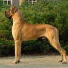
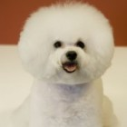
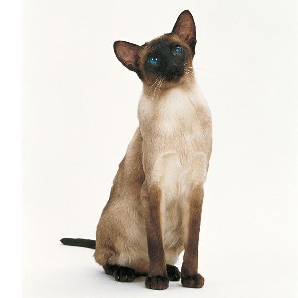

Dierenasiel ''De Gentiaan
HOME
BESCHIKBAAR
WERK
Beschikbare dieren in het asiel
Honden
Pluto (ras: Tosa Inu)

De Tosa Inu is van oorsprong een Japanse hond waarvan de reuen worden gebruikt als vechthonden.
In onze samenleving mogen honden hier niet voor gebruikt worden.
Ondanks zijn slechte reputatie is deze vrij zeldzaam voorkomende hond geschikt als gezinshond.
Herta (Ras: Duitse Dog)

De Duitse Dog, in Nederland vaak Deense Dog genoemd naar de letterlijke Engelse vertaling Great Dean, is een echt bakbeest.
De honden hebben een schofthoogte die varieert tussen de 72 en 80 cm. en een gewicht van soms wel 80 kg. of meer.
Toch ziet deze groot reus er indrukwekkender uit dan hij of zij is. De Duitse dog is een zeer rustige familiehond die een strikte opvoeding nodig heeft.
Als je je hier aan houdt heb je een maatje voor het leven!
Woefie (Ras: Bichon Frise)

De Bichon Frise is een hondenras dat al jaren aan populariteit wint. Al bekend in de 14e eeuw, geliefd bij schilders,
schoothond voor de aristocratie, kunstjes doen in het circus, hartendief bij vele hondenshows, toegepakt in een wieg voortgetrokken door schaterende kinderen,
de Bichon Frise kent vele rollen en speelt ze allemaal gemoedelijk mee.
Katten
Mickey (Ras: Siamees)

De Siamees heeft het meest opvallende karakter van alle raskatten.
Bij een Siamees is alles nét iets meer dan bij andere katten: aanhankelijkheid, miauwen,
aandacht vragen en emoties. Daarom is de Siamees niet voor iedereen geschikt. Voor wie ervan houdt,
is de Siamees een bijzondere kameraad. De vacht is makkelijk te verzorgen.
Bella (Ras: Burmees)

De Burmees is een bijzonder opvallend ras. Hij is erg aanwezig en levendig en is nergens bang voor.
Hij miauwt veel en hard en kan erg zelfverzekerd zijn naar soortgenoten. De Burmees kan niet goed alleen zijn,
hij heeft rasgenoten en mensen om zich heen nodig. Door zijn karakter heeft hij behoefte aan ruimte en afleiding.
De vachtverzorging is eenvoudig.
Cavia's
Kuifje (Ras: langhaar)

De Britse Langhaar heeft hetzelfde karakter als de Britse Korthaar: hij is makkelijk,
past zich goed aan en is sociaal naar mensen, soortgenoten en honden. Hij is er graag bij,
maar gedraagt zich niet opdringerig. De vacht van de Britse Langhaar vraagt veel verzorging.
Konijnen
Geen konijnen beschikbaar
Naar boven